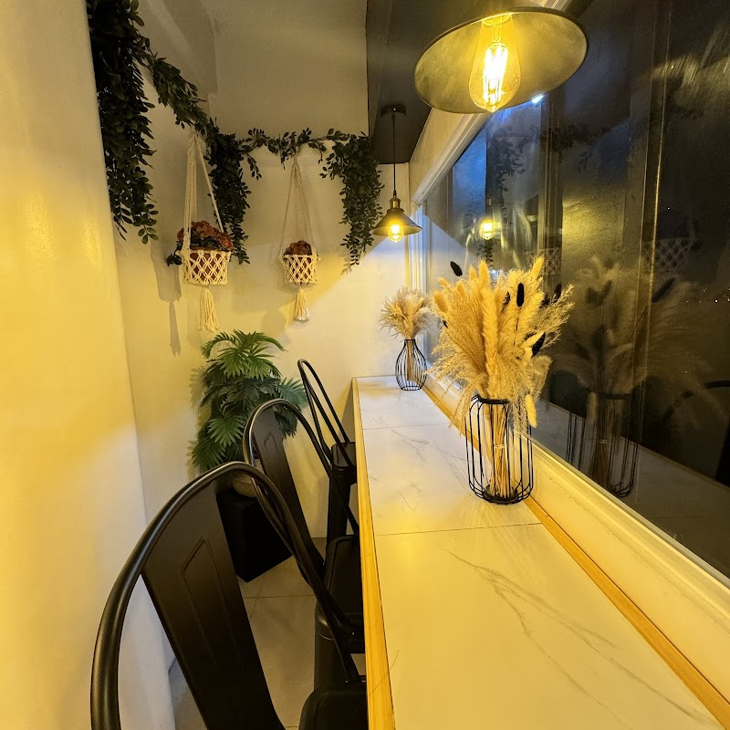

Recent Hot Picks!
Check our Top Sellers! Order at the nearest branch or contact us and inquire for services like catering for special events!




Why Customers choose to dine in Sa Poste Cafe?
We keep our drinks affordable, our snacks generous, and our service quick — because a café should fit into your day, not slow it down. Every branch is run the same way: fresh ingredients, consistent recipes, and staff who remember your usual order.
Sa Poste also runs three sister branches across Iloilo City — Molo, Pavia, and C1 — so if Jaro isn't near you, there's likely one close by.